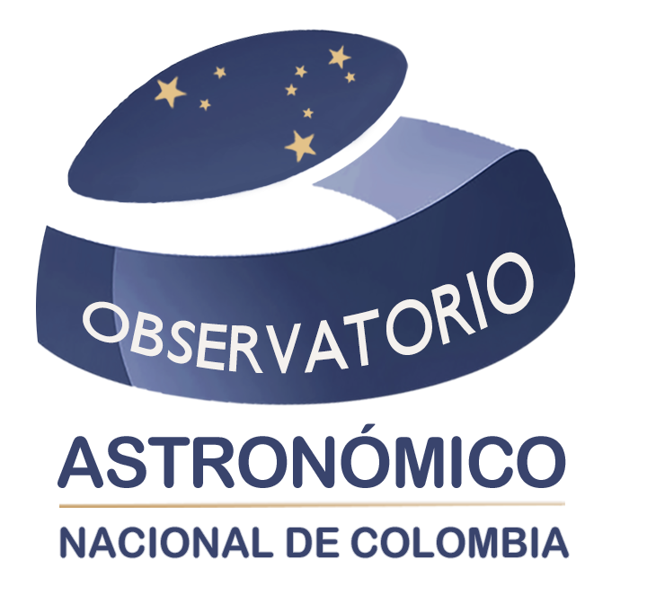
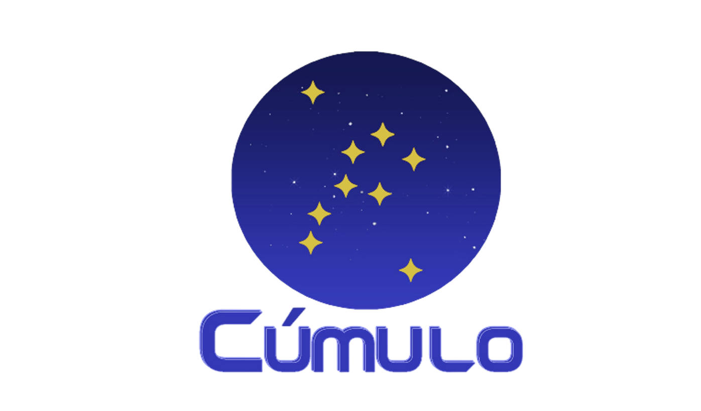

Conoce sus voces
Una conversación audiovisual para descubrir el semillero, sus motivaciones y su relación con la astronomía.
Ver conversación con Cúmulo ↗
OAN1803ObservatorioDIVULGACIÓN Y SEMILLEROS
Una invitación a preguntar, conversar y descubrir el cielo dentro y fuera de la universidad.

Un espacio de encuentro para estudiantes que quieren aprender y compartir astronomía, desde diferentes disciplinas.
eSPECTRA presentó Cúmulo UN en su primer número de 2023 como una iniciativa de aprendizaje colaborativo entre estudiantes de distintas sedes. El nodo Bogotá desarrolla actividades de divulgación vinculadas al Observatorio.
Una conversación audiovisual para descubrir el semillero, sus motivaciones y su relación con la astronomía.
Ver conversación con Cúmulo ↗Consulta las publicaciones del nodo para conocer encuentros y novedades. Confirma allí la programación de cada actividad.
Novedades de Cúmulo Bogotá ↗Una revista que abre espacio a la producción académica, las historias de la astronomía y las voces de sus protagonistas. Explora artículos, entrevistas y reseñas en el portal editorial.
Entrar a eSPECTRA ↗Proyecciones astronómicas para actividades educativas.
Consultar el servicio ↗Documentos y conferencias para comprender cómo se ha construido la ciencia en Colombia.
Explorar el patrimonio ↗Entrevistas que conectan la física solar, la divulgación y experiencias como Astronomía para la Paz.
Escuchar en Persea ↗SERIE AUDIOVISUAL
Una conversación para viajar del cielo cercano a las grandes preguntas del universo.
La serie de divulgación del canal del Observatorio reúne conversaciones sobre astronomía y ciencias del espacio. Explora sus tres temporadas y una selección de episodios sobre agujeros negros, la Luna, estrellas, exploración y otros mundos.
13 episodios con títulos y miniaturas del canal oficial. Las listas superiores dan acceso al resto de la serie.
 Temporada 1 · Programa 1Programa 1Ver en YouTube
Temporada 1 · Programa 1Programa 1Ver en YouTube Temporada 1 · Programa 2Agujeros Negros.Ver en YouTube
Temporada 1 · Programa 2Agujeros Negros.Ver en YouTube Temporada 1 · Programa 5Lunas en el sistema solarVer en YouTube
Temporada 1 · Programa 5Lunas en el sistema solarVer en YouTube Temporada 1 · Programa 11Nebulosas PlanetariasVer en YouTube
Temporada 1 · Programa 11Nebulosas PlanetariasVer en YouTube Temporada 1 · Programa 15Sondas EspacialesVer en YouTube
Temporada 1 · Programa 15Sondas EspacialesVer en YouTube Temporada 2 · Programa 8Sistemas BinariosVer en YouTube
Temporada 2 · Programa 8Sistemas BinariosVer en YouTube Temporada 2 · Programa 10Todo sobre la LunaVer en YouTube
Temporada 2 · Programa 10Todo sobre la LunaVer en YouTube Temporada 2 · Programa 14El cielo invisibleVer en YouTube
Temporada 2 · Programa 14El cielo invisibleVer en YouTube Temporada 3 · Programa 1Lanzamiento FITS LIBERATORVer en YouTube
Temporada 3 · Programa 1Lanzamiento FITS LIBERATORVer en YouTube Temporada 3 · Programa 11Mundos fuera de nuestro sistema solarVer en YouTube
Temporada 3 · Programa 11Mundos fuera de nuestro sistema solarVer en YouTube Temporada 3 · Programa 12Todo sobre el SolsticioVer en YouTube
Temporada 3 · Programa 12Todo sobre el SolsticioVer en YouTube Temporada 3 · Programa 13Rocas espacialesVer en YouTube
Temporada 3 · Programa 13Rocas espacialesVer en YouTube Temporada 3 · Programa 15Como turistas espacialesVer en YouTube
Temporada 3 · Programa 15Como turistas espacialesVer en YouTubeCanales enlazados desde el portal de eSPECTRA. Las actividades antiguas se conservan como memoria, no como agenda vigente.